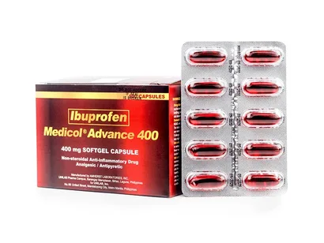
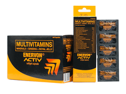
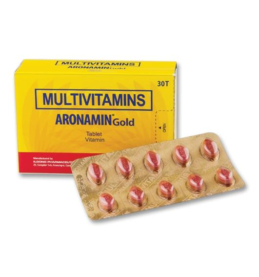

Medicine Guide For Fatigue

What is the medicine used for? For the relief of headache; For the relief of toothache, muscular aches, minor arthritis pain, backache, minor aches and pains associated with the common cold, and pain of menstrual cramps (dysmenorrhea); For fever reduction.
MEDICOL
Description
Medicol® Advance 200What is the medicine used for? For the relief of headache; For the relief of toothache, muscular aches, minor arthritis pain, backache, minor aches and pains associated with the common cold, and pain of menstrual cramps (dysmenorrhea); For fever reduction.
Guide
This medicine is given orally and may be taken with food or milk if stomach upset occurs. Adults and children 12 years old and above: One softgel capsule up to 3 times a day, as needed. Leave at least 4 hours between each dose. Alternatively, you may take one softgel capsule every 8 hours, as needed.

More than multivitamins, it's got natural fatigue fighters ginseng and royal jelly to help sustain your energy and help boost your mental focus so you wake up active and stay active!
It also contains vitamins C, A, E, D3, and Zinc to help boost your immune system so you stay protected.
ENERVON
Description
Feel the difference from the moment you wake up with Enervon Activ.More than multivitamins, it's got natural fatigue fighters ginseng and royal jelly to help sustain your energy and help boost your mental focus so you wake up active and stay active!
It also contains vitamins C, A, E, D3, and Zinc to help boost your immune system so you stay protected.
Guide
Enervon® Activ can be taken anytime of the day, once daily.
MUSKELAX
Description
For the relief of mild to moderately severe pain of musculoskeletal origin such as muscle pain (myalgia), arthritis, rheumatism, sprain, strain, bursitis (inflammation of the fluid-filled sac or bursa that lies between a tendon and skin), tendinitis, backache, and stiff neck.• For the relief of tension headache, dysmenorrhea, toothache, pain after tooth extraction and minor surgical operations.
• For fever reduction.
Guide
Adults and Children 12 years and older: 1 tablet every 6 hours as needed, or, as directed by a doctor.1. Do not exceed 6 tablets in each 24-hour period.
2. Do not take for more than 10 days unless directed by a doctor.
3. Not recommended for children below 12 years old.

ARONAMIN
Description
Multivitamins (Aronamin Gold) is a multi-active vitamin preparation composed of the active forms of vitamins B1, B2, B6 and B12, and vitamins C and E.Guide
Use as directed on the label
SEREMAX
Description
Drug used to treat epileptic siezures, an anticonvulsant.Guide
In overdoses up to 15g, no expected adverse reactions were reported. In the post-marketing experience, the most commony reported adverse events observed when pregabalin was taken in overdose included affective disorder, somnolence, confusional state, depression, agitation and restlessness. Treatment of pregabalin overdose should be included general supportive measures and may include haemodialysis if necessary.
PHARMATON
Description
Pharmaton ENERGY+ has GINSENG, VITAMIN B COMPLEX, and MAGNESIUM that are important for the production of energy and for normal energy-yielding metabolism, and VITAMIN C & D and Zinc that contribute to the normal function of the immune system. Food supplement. Usage: One tablet daily is recommended. For adult use only.Guide
Pharmaton ENERGY+ has GINSENG, VITAMIN B COMPLEX, and MAGNESIUM that are important for the production of energy and for normal energy-yielding metabolism, and VITAMIN C & D and Zinc that contribute to the normal function of the immune system. Food supplement. Usage: One tablet daily is recommended. For adult use only.